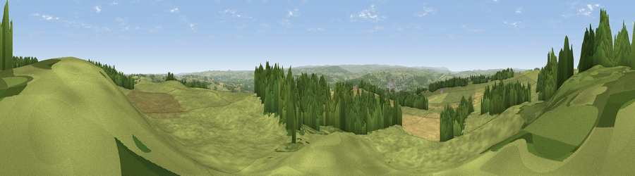

Viewpoint near Oakwood
#9019 in England · top 14% of its area beats it · near OakwoodWhere it is
The exact computed spot (NY 96975 67850). Click the marker for map links.
The view, rendered

A 360° render of this exact spot computed from the terrain model, tree cover and land cover — summer colours, afternoon light, calibrated against photographs of famous viewpoints. Real trees, hedges and buildings will differ in detail.
The panorama
Grey silhouette: terrain skyline in each direction (720 bearings, Earth curvature and refraction included). Dashed green: skyline with trees (+15 m) and buildings (+8 m) as obstacles. Blue strip: how far the ground is visible on each bearing.
Where the view opens
Wedge length = distance to the farthest visible ground on that bearing (vegetation-aware). Rings at 10, 25 and 50 km.
What fills the view
67% grassland · 22% woodland · 10% cropland ·
Angular shares of the visible panorama (visual magnitude), not map area. Landscape diversity 0.38 (0–1 Shannon).
Key numbers
More beautiful places nearby
The staircase of upgrades: each row has a higher view potential than everything closer. Driving times are estimates from straight-line distance, calibrated against real road routing — check an actual route before setting out.
| Place | Direction | Drive | Score |
|---|---|---|---|
| Viewpoint near Oakwood | SSE · 1 km | ~3 min | 66.7 |
| Viewpoint near Oakwood | SSW · 1 km | ~3 min | 67.3 |
| Viewpoint near Chollerford | NW · 3 km | ~7 min | 67.5 |
| Viewpoint near Fourstones | W · 7 km | ~14 min | 71.4 |
| Viewpoint near Hedley on the Hill | ESE · 15 km | ~27 min | 71.5 |
| Viewpoint near Greenside | ESE · 17 km | ~29 min | 74.2 |
| Pontop Pike | SE · 23 km | ~38 min | 77.8 |
| Viewpoint near Thropton | N · 31 km | ~48 min | 81.8 |
55.00521, -2.04883 · source: screening · position refined by local search. Computed location — check access rights before visiting.